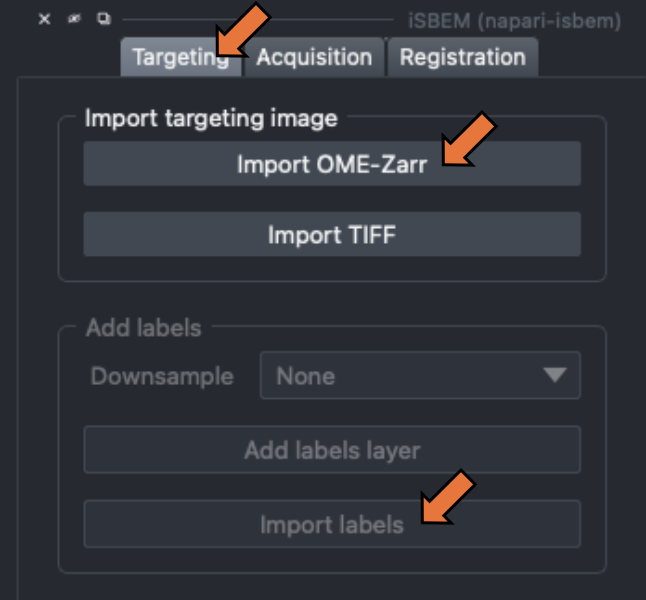
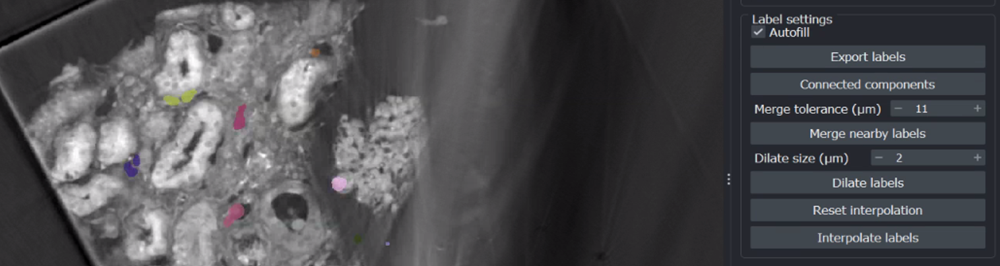
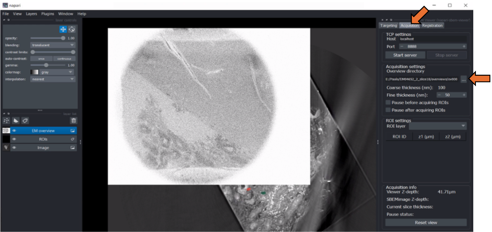
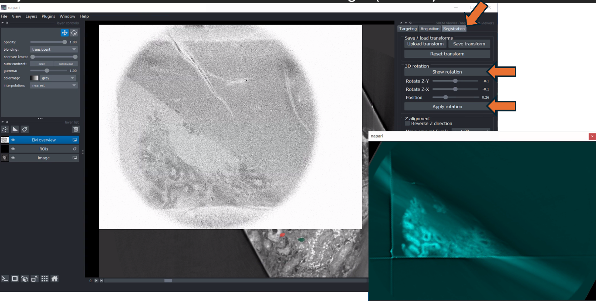
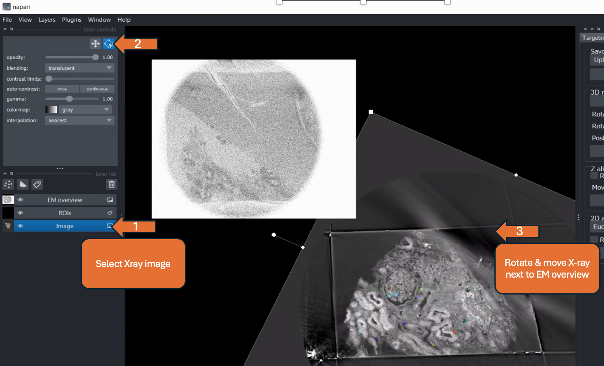
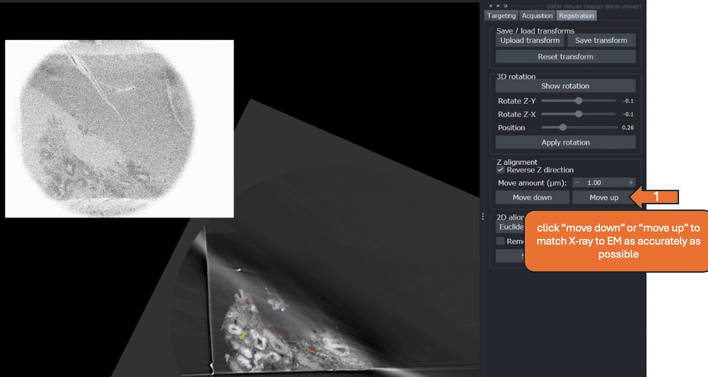
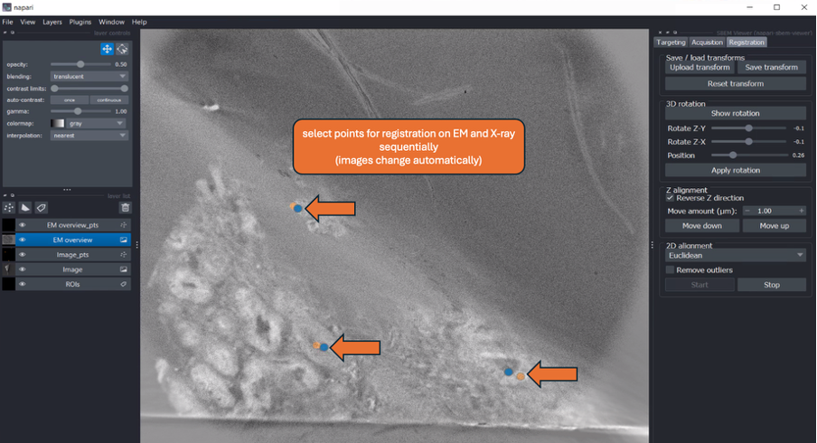
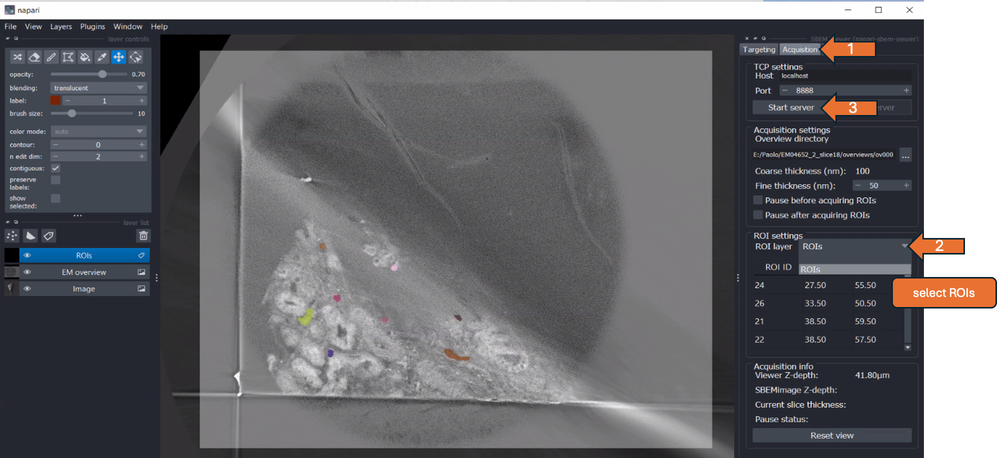
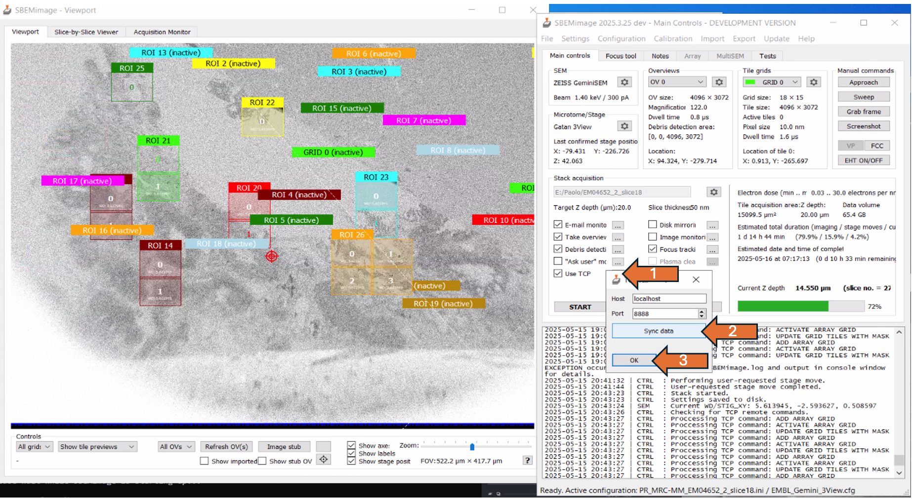
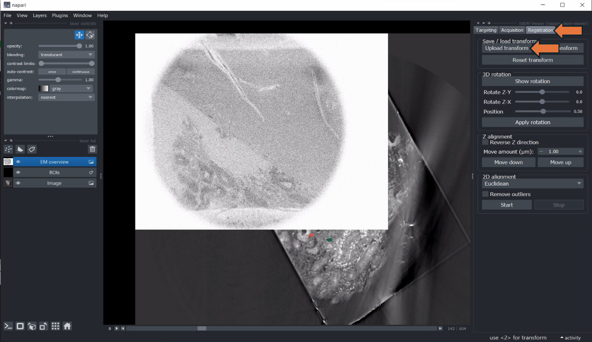

iSBEM User Guide
Created: 20.05.2025, Yanneck Klenz
Edited: 20.04.2026, Fiona Young
This is a step-by-step user guide for a typical workflow using iSBEM. It describes the steps depicted in the accompanying PDF, which is referenced throughout ("slide x").
Before "Targeting"
- Approach block, when cutting, adjust the focus stigmators and wobbler
- Acquire Overview stack (Z = 1 µm) with a cutting thickness matching the settings for the actual acquisition (e.g. 100 µm)
- When importing X-ray as TIFF, check if the correct pixel size is saved in the image properties
Import Datasets and preprocess ROIs > "Targeting"
- Go to "Targeting" (top right menu)
- Import X-ray tomogram (OME-zarr or TIFF format) (slide 2) and adjust contrast, if needed (slide 3)
- Import labels (TIFF) (slide 3)

- Dilate ROIs, create a buffer in all dimensions (slide 4)
- Run connected components and merge nearby labels to avoid double scanning (adjust merge tolerance based on tile size) => create individual ROIs
- Save adjusted ROIs by selecting "Export labels" (slide 7)

- Go to "acquisition" (top right menu) > set EM overview directory > move slider to the left until EM overview is visible (slide 8 -10)

Rotation Transformation > "Registration"
- Go to "Registration" > show rotation => second napari window pops up with X-ray volume in cyan
- Drag and rotate the image (in the pop-up window) to match EM overview (slide 12)
- Adjust the position to match X-ray to EM overview (slide 12)
- Adjust the rotation in Z-X and Z-Y to match both images (slide 13)

- Close second window > "apply rotation" > message "Image rotated successfully!"
2D alignment > "Registration"
- Select X-ray image (left menu) > click "transform" bottom (top left) > rotate and move X-ray image next to EM overview (slide 16)

- Tick reverse Z direction, if both datasets do not move in the same direction when changing the bottom slider (slide 17)
- Click "move up" or "move down" to match the display of the X-ray to the EM overview (slide 18) as accurately as possible
- can adjust "Move amount (µm)" to be more accurate
- If the overview is no longer depicted in the viewer, go to "Acquisition" > "Reset view"

- Press "Start" under 2D alignment > "point" layer for each modality should be added to the layer list on the left (slide 19)
- Select landmarks on EM and X-ray sequentially for 2D registration (images should switch automatically)
- Alignment is done in real-time > after each point is added, evaluate the output

- Using the drop-down menu, select the desired transformation method (Euclidean, Similarity, Affine ) -> output is updated immediately > can compare results of different methods (slide 21)
- Satisfied with the result of 2D alignment > press "stop" (slide 22)
- Save rotation and 2D alignment as ".txt" by clicking "Save transform"
ROI selection > "Acquisition"
- Go to the "Acquisition" tab (top right menu)
- In the drop-down menu under "ROI settings," select "ROIs" (slide 24)
- By double-clicking on "ROI ID" in the depicted table, the respective ROI is shown in the center of the napari viewer -> can be used to check each ROI
- Set the acquisition settings, including cutting thickness and pause options, as required (slides 25-27)
- Press "Start server" (slide 24)

- Go to SBEMimage > tick "Use TCP" > click on the "..." symbol next to it
- In the popup window, select "Sync data" > click "Ok" (slide 28)
- ROIs should appear in the SBEMimage Viewport > check if positions are correct

- Adjust the focus and the stigmators
- In acquisition settings, define target depth (e.g. 10. µm) and cutting thickness (e.g. 100 nm) and start acquisition
- After the defined target depth is reached, re-register the two volumes in napari
- Continue with the acquisition
Resuming from saved transformation (slides 30-38)
- Import X-ray and saved labels as usual
- Saved labels should be dilated and merged
- Load EM overview as described
- Go to "Registration" > click "Upload transform" > select the last saved transformation

- Should apply rotation and 2D transform on the X-ray
- Resume with "ROI selection" as described above (slide 24, 25)